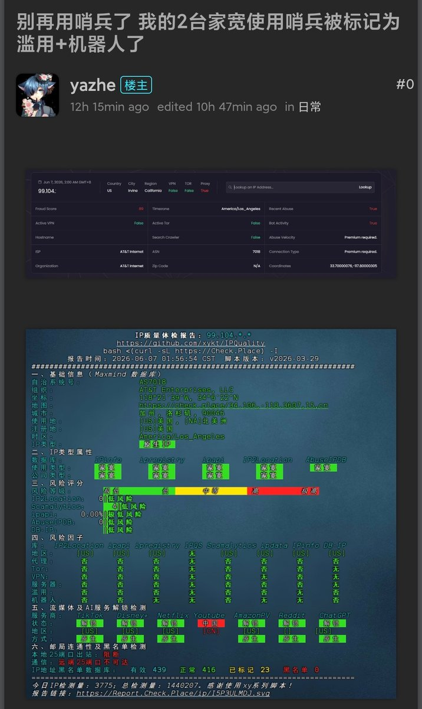
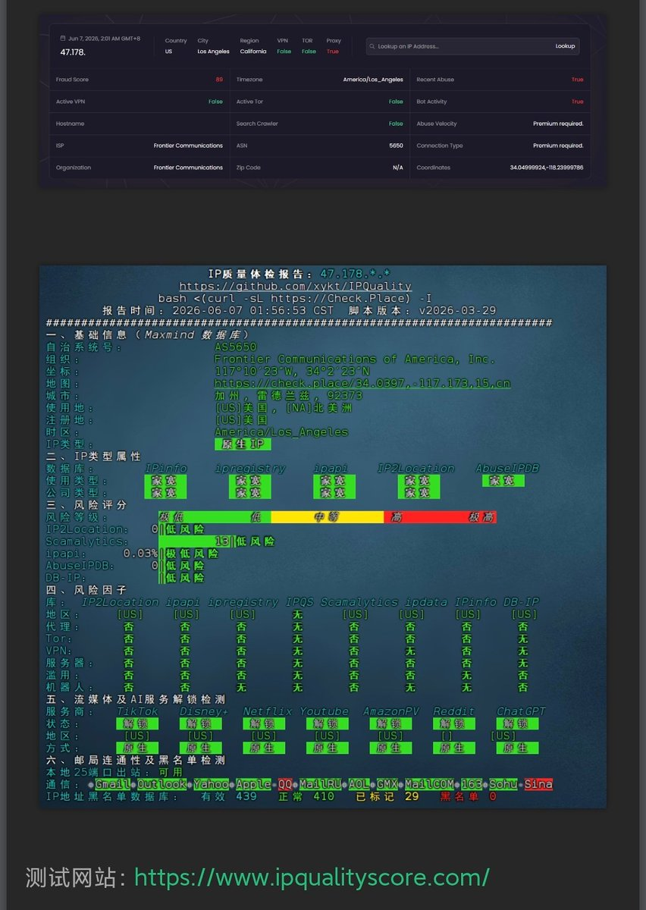

奶昔🥤
@realNyarime
为啥非要在家宽上用，把水搅浑
就好比身上有个无关痛痒的小伤口，本来一两天自然就愈合了
结果非要定时定点揭开伤口看看好了没有……
最后伤口感染，是最终的定论🤣


奶昔🥤
@realNyarime
将送中的IP拉直，从而过滤掉人机验证风控等
朋友说挂了差不多两周，VPS从送中状态恢复了，虽然不知道是不是这个起作用
有没有MJJ告诉我这玩意有用吗？？？ https://t.co/J9CYbrwYYr